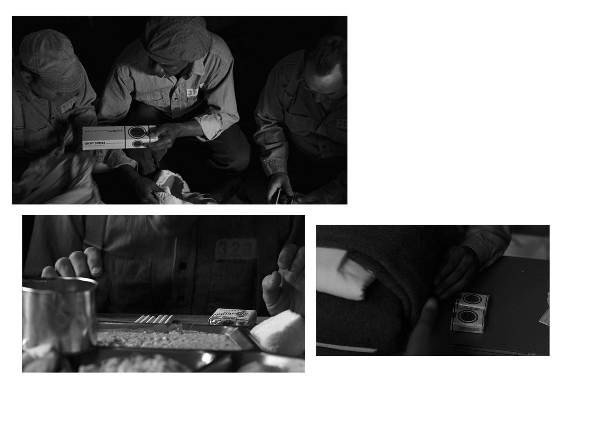
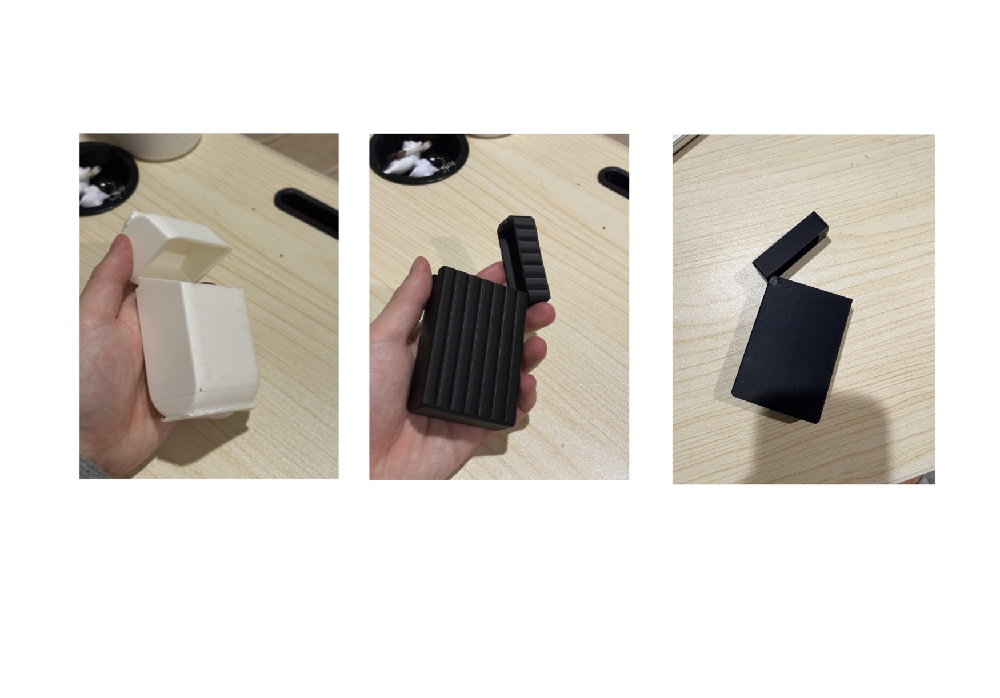
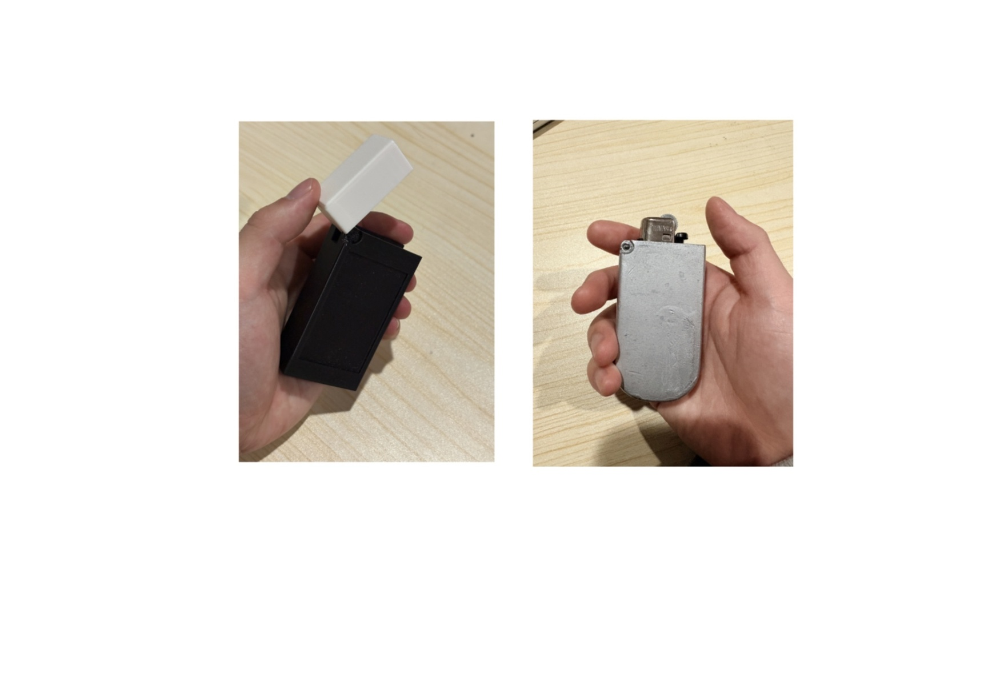
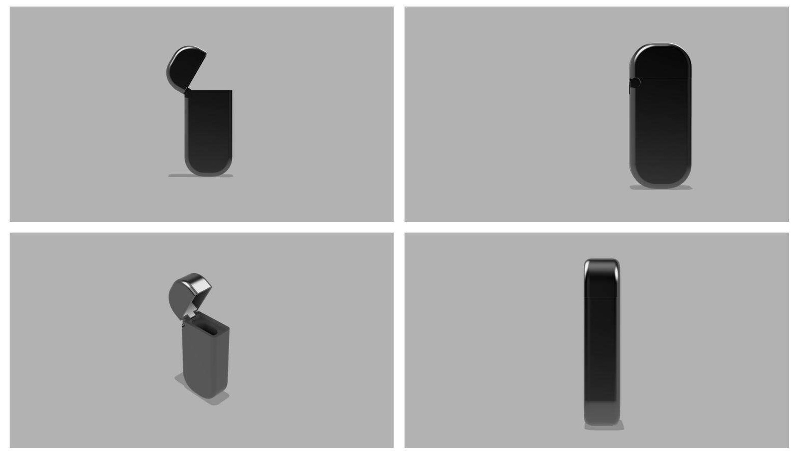
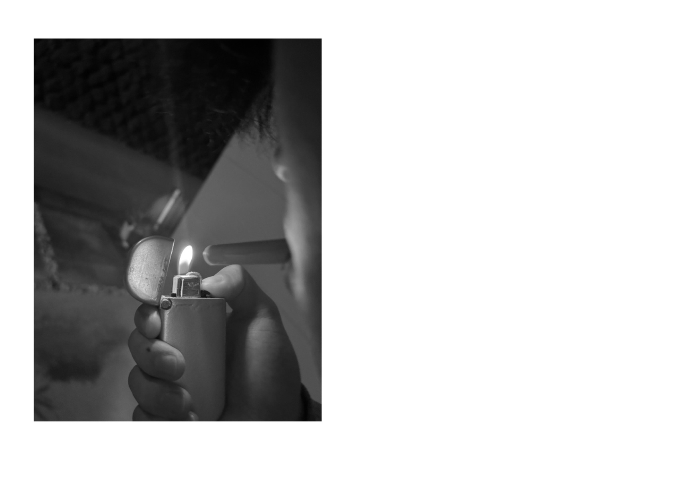

Design Idea

Fire was discovered by early humans when lightning struck. It was a force of warmth and survival, used to cook food, provide light, and build communities. That same fire is now used to burn buildings and destroy lives. The people who first discovered it could not have imagined it being used this way.
Metal carries the same neutrality. It can be formed into a ladder that helps a firefighter save lives, or a blade that ends one. It has no malice of its own. Justice works the same way, a system that claims fairness but whose outcome depends entirely on who holds it and how it is directed. The title itself references the homophone 'just us', questioning who that fairness actually protects.
The lighter was chosen because of its direct connection to fire, and because of how cigarettes function in contexts of confinement. In The Shawshank Redemption, cigarettes are currency. In prison, they represent power, something one person can have and another cannot, not because of fairness, but because of position. The object that produces the flame becomes an instrument of that imbalance.

The goal was to design a vintage-inspired lighter that reflects the conflicted nature of the character. A multipurpose function was considered as a way to expand its role, but the focus remained on a minimal, clean design. Something subtle and practical that an everyday person could carry as part of their daily routine.
Sketches

Process

The first prototype was inspired by a cigarette container. The initial concept aimed to combine both a cigarette holder and a lighter into a single object. The first challenge was developing a hinge mechanism that allowed easy access while maintaining a compact form.
The second prototype focused on reducing thickness. The first version was too bulky and difficult to carry in a pocket. This iteration reduced the internal capacity for cigarettes but improved portability and usability, shifting the design toward practical everyday use.
The third prototype removed the cigarette holder entirely, simplifying the design into a dedicated lighter case. This iteration prioritized practicality and reduced visual complexity by eliminating surface textures and unnecessary details.

The fourth prototype introduced a ridge along the side of the case. This feature was intended to add functionality, with the idea of incorporating a mirror or an additional use to expand the product beyond a single-purpose object.
The final prototype removed excess detailing and softened all corners. Feedback from earlier versions indicated that sharp edges were uncomfortable when held and caused discomfort when carried in pockets. The mirror concept was also removed, as it introduced unnecessary complexity and moved away from the clean, minimal direction of the design.
CAD Render

Final

The final design resulted in a compact lighter with a curved body, allowing it to sit comfortably in the hand while maintaining a clean and minimal form. The reduced size and softened edges improved both ergonomics and portability, reinforcing the practical nature of the object.
The metallic finish references MF DOOM, who was known for wearing a metal gladiator-style mask to conceal his identity, most notably on the cover of Madvillainy. The worn, gritty aesthetic of the album artwork aligned with the project's theme of justice an idea that is often imperfect, conflicted, and shaped by real-world complexity rather than polished ideals.